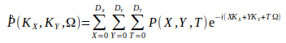
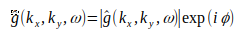
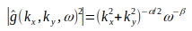
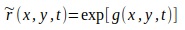
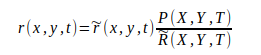

Annex B - Rainfarm¶
Rainfarm belongs to the family of metagaussian models and it is based on a nonlinear transformation of a linearly correlated process. This approach is closely related to the Turning Bands Method and has been used both for satellite-based rainfall measurement validation and for stochastic rainfall modelling.
The model is able to generate small-scale rainfall fields that take into account not only the total amount of precipitation predicted by the meteorological model but also its linear correlation structure and the position of the main rainfall patterns. Due to the straightforward link between the model parameters and the large-scale field, this model is suitable for operational downscaling procedures.
{kind=link}
Time average of the original, LAM field panel (a) and of one realization of the stochastic field generated by the Rainfarm panel (b). The values indicate the average precipitation in mm/h.
Rainfarm uses the spectral information of large-scale meteorological predictions and generates fine resolution precipitation fields by propagating this information to smaller scales. The basic idea is to reconstruct the Fourier spectrum of the small-scale precipitation field by preserving the LAM information at the scales where we are confident in the meteorological prediction. The rainfall field is seen as the superposition of a finite number of harmonics with amplitudes decreasing as spatial and temporal scales become smaller. For a given realization (the predicted field at hand) the harmonics at large scales are assumed to be well predicted by the meteorological model, and should be preserved. A major concern is to figure out which are the scales below which the forecasted fields are considered to be unreliable.
| Parameter | Description |
| \(L_0\) | Reliable spatial scale of LAM |
| \(T_0\) | Reliable temporal scale of LAM |
As shown in the previous section, the Rainfarm model has four free parameters, named \(L_0\), \(T_0\), \(\alpha\) and \(\beta\). \(L_0\) and \(T_0\) represent the spatial and temporal resolutions at which the precipitation prediction is considered reliable and they should be fixed by the user depending on the numerical model considered. The spectral parameters \(\alpha\) and \(\beta\) are estimated in real-time from the LAM power spectrum. The RainFARM works as follows. The aggregation of the LAM field on spatial and temporal scales \(L_0\) and \(T_0\), generates the starting field, called \(P\). From this coarse-grained prediction RainFARM produces downscaled fields by following these steps:
- Computation of the Fourier transform of the coarse-grained LAM-predicted field \(P(X, Y, T)\). This procedure generates a spatial-temporal Fourier spectrum \(\dot{P}(K_X, K_Y, \Omega)\) defined as follows:
Where \(D_X\), \(D_Y\) and \(D_T\) are the domain sizes in space and time respectively. Here, \(D_X\), \(D_Y\) are the wave numbers in the X and Y directions and \(\Omega\) is the angular frequency. Clearly, \(K_X, K_Y <= \pi/L_0\) and \(\Omega <= \pi/T_0\), where \(\pi/L_0\) is the Nyquist wavenumber and \(\pi/T_0\) is the Nyquist frequency of the field to be downscaled.
- Estimate of the space-time power spectrum \(\vert{\dot{P}(K_X, K_Y, \Omega)^2}\vert\) of the aggregated LAM field \(P\) as the square of the modulus of its Fourier transform \(\hat{P}\).
- Extrapolation of the power spectrum \(\vert{\hat{P}^2}\vert\) to small scales. To do so, we assume the power spectrum of the rainfall field to have an approximate power-law behavior, consistent with the outcome of several analyses on the structure of precipitation fields. The procedure estimates the spatial and temporal logarithmic slopes (\(\alpha\) and \(\beta\) respectively) of the LAM power spectrum, \(\vert{\hat{P}}\vert\). For simplicity, we assume isotropy in the two spatial directions.
- Generation of a Fourier spectrum \(\hat{g}(k_x, k_y, \omega)\), defined as:
where \(\theta(k_x, k_y, \omega)\) are random, uniformly distributed phases. The wavenumbers (\(K_x)\) and \(k_y\)) and the frequency (\(\omega\)) range from the scales corresponding to the downscaling domain size to those associated with the downscaling resolution. We use the functional form:
By inverting the Fourier spectrum, , we obtain a Gaussian field defined on the whole range of scales between the domain size and the downscaling resolution, which we normalize to unit variance.
- Generation of a synthetic precipitation field, \(\hat{r}(x, y, t)\), by taking a nonlinear transformation of the Gaussian field \(q\). Here we use the simple transformation:
which leads to a log-normal field \(\hat{r}\).
- We force the synthetic field to be equal to the original field \(P\) when aggregated on the scales \(L_0, T_0\) by defining a new field:
Where \(\hat{R}\) represents the field aggregated at the scale \(L_0, T_0\). When aggregated on space and time scales larger or equal to \(L_0\) and to \(T_0\), the field behaves exactly as the original field \(P\). The stochastic nature of the downscaled field \(r\) is associated with the choice of the set of random Fourier phases. By choosing different sets of random Fourier phases, one can generate a large number of stochastic fields which are all equal to \(P\) when aggregated on space and time scales larger than \(L_0\) and \(T_0\), and which are different, but with similar statistical properties, on smaller scales.